Entre
Je photographie souvent des choses qui semblent d’abord indépendantes.
Pourtant, un regard, une distance, une ligne ou une coïncidence suffit parfois à les mettre en relation.
Entre est un livre né de ces rapprochements.
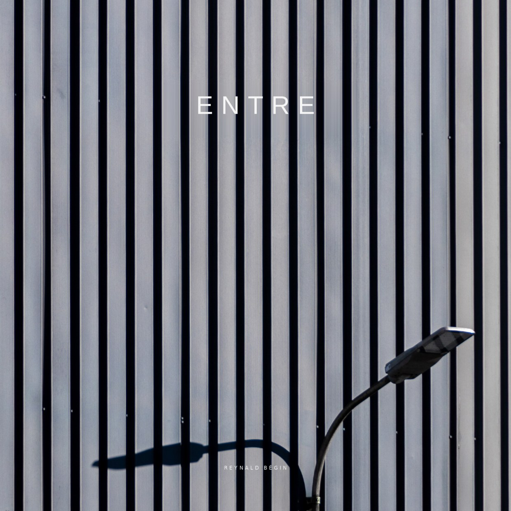
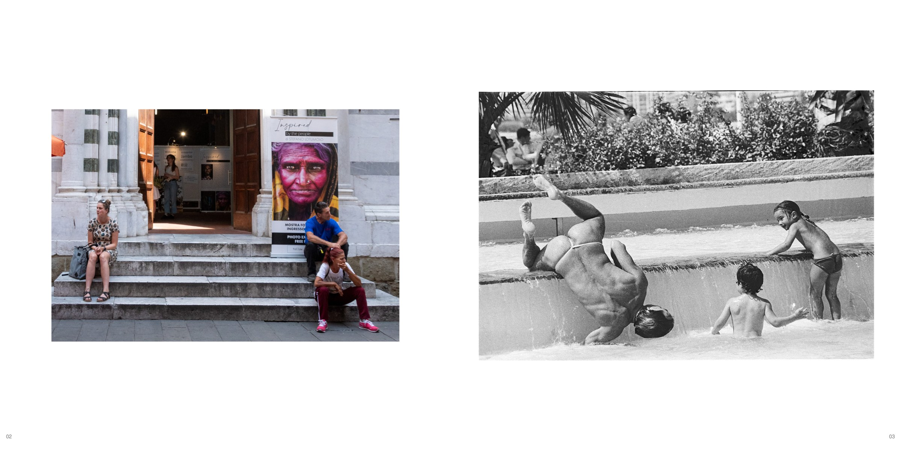
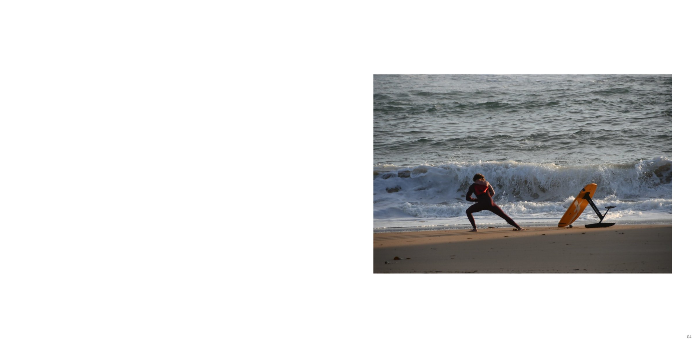
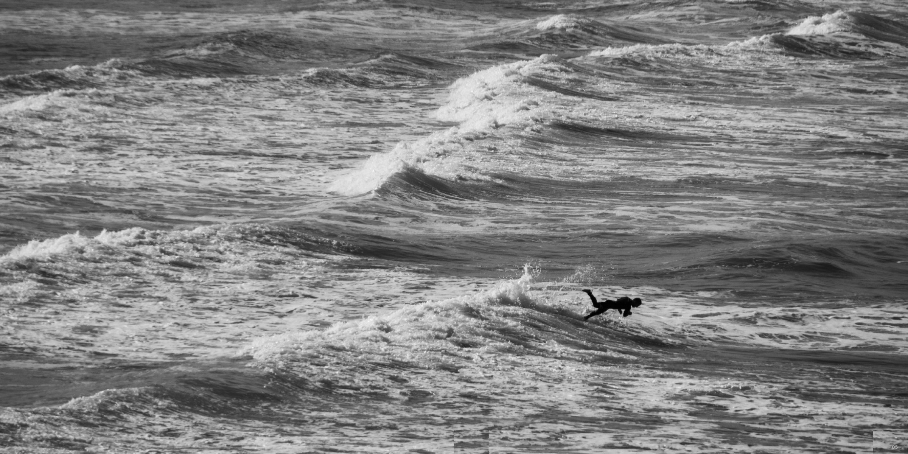
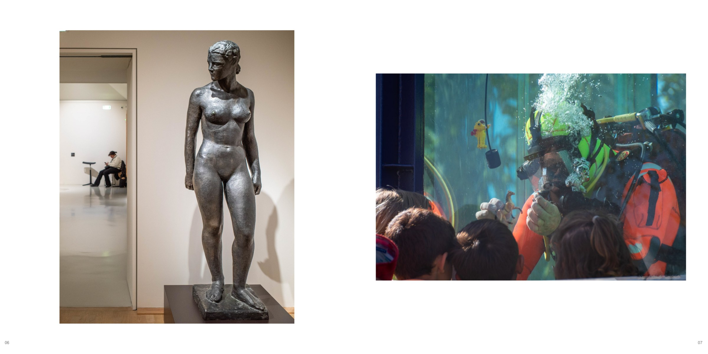
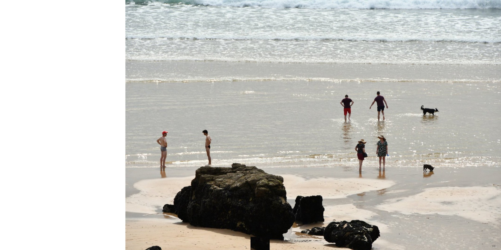
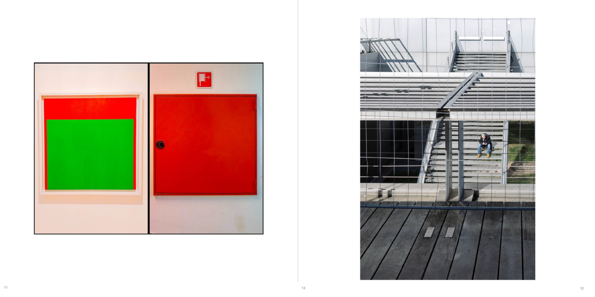
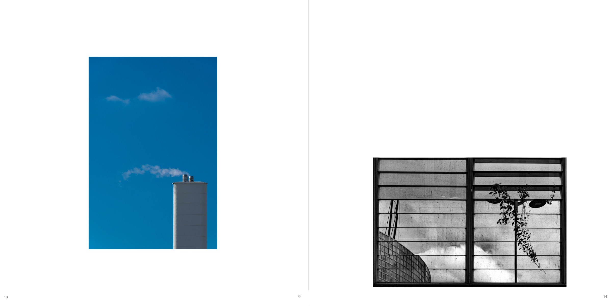
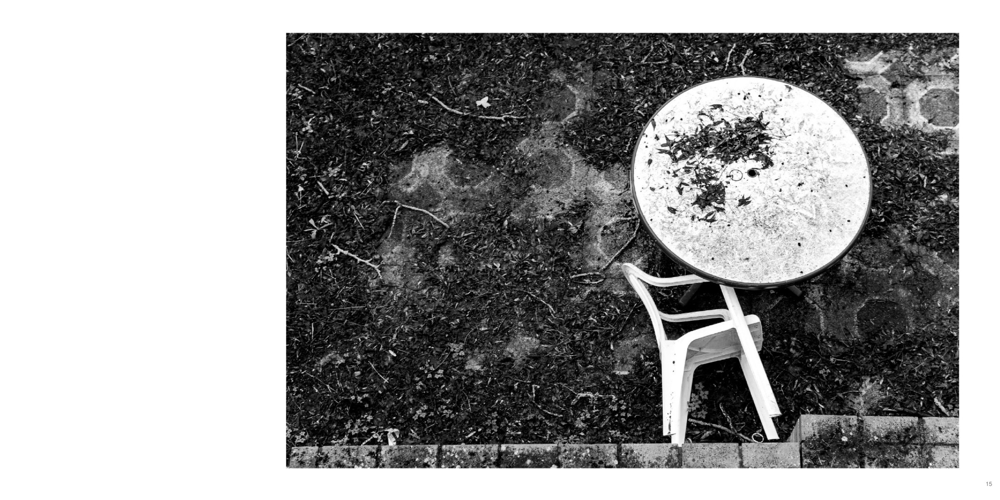
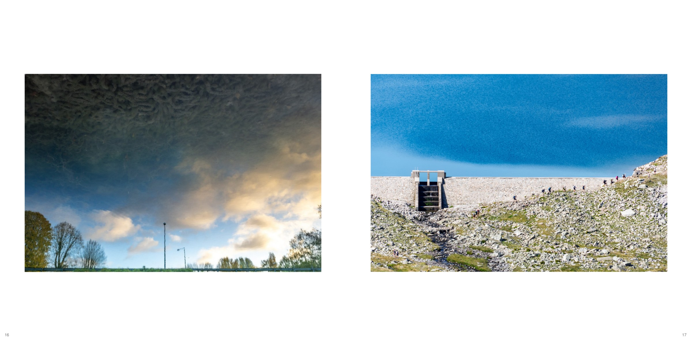
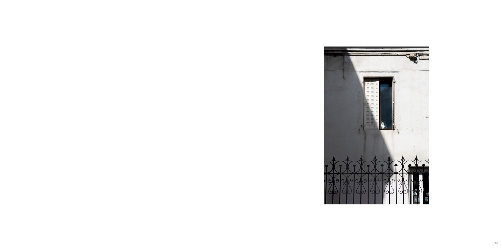
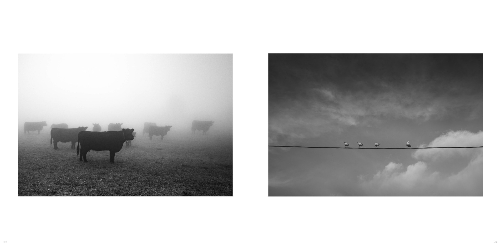
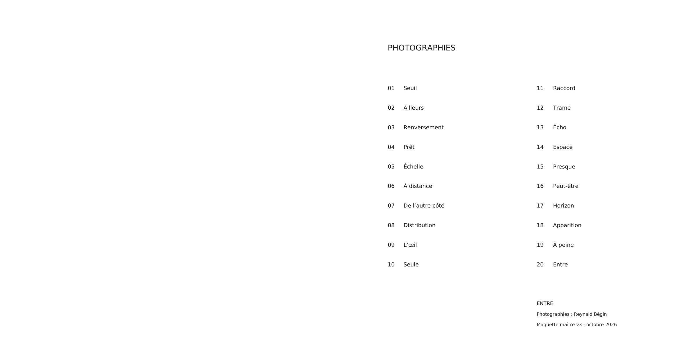